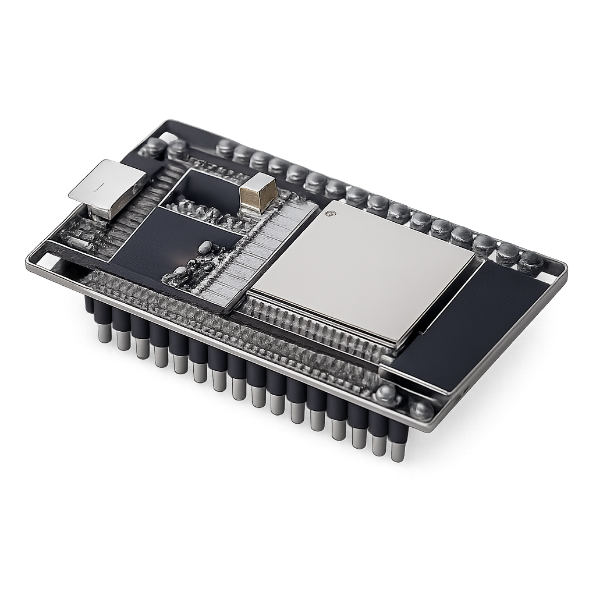
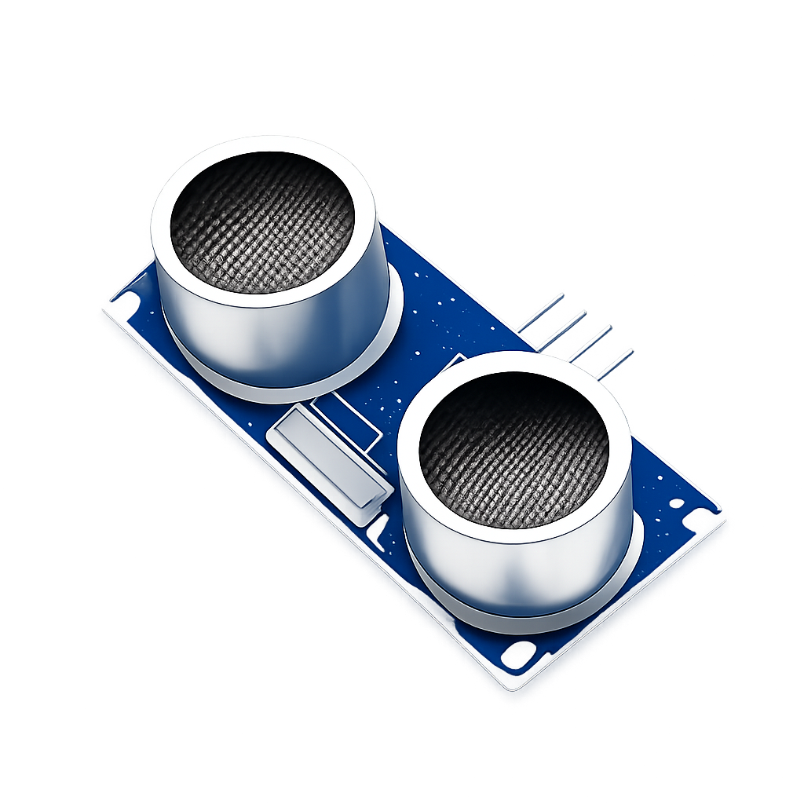
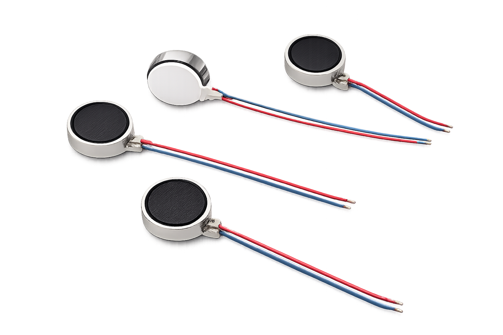
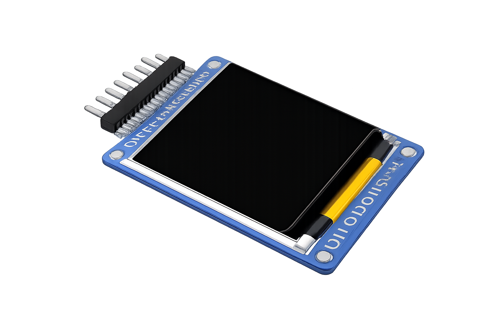
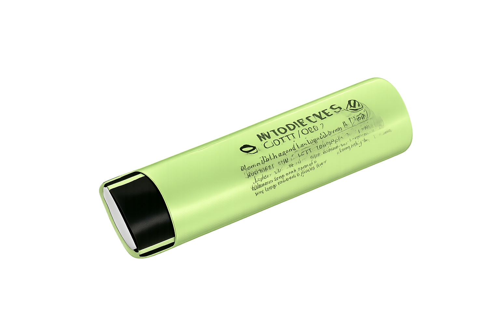
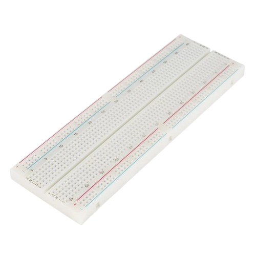
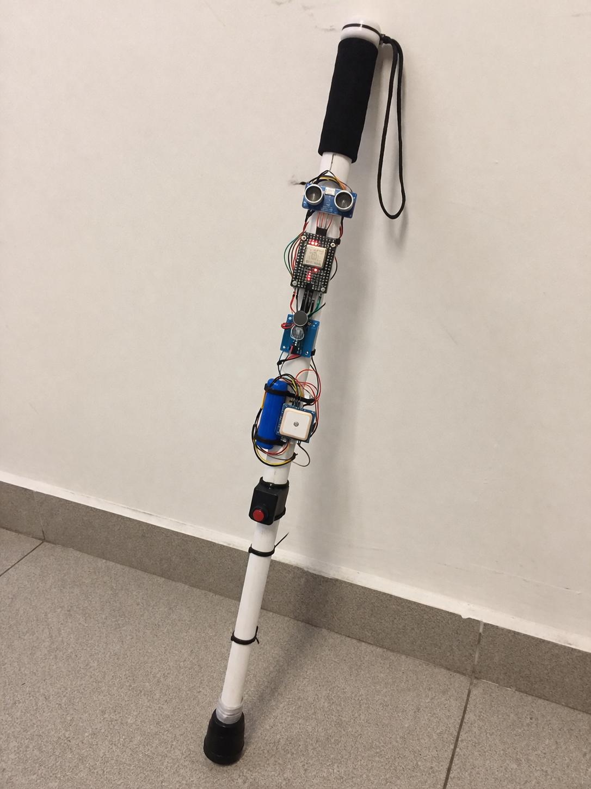
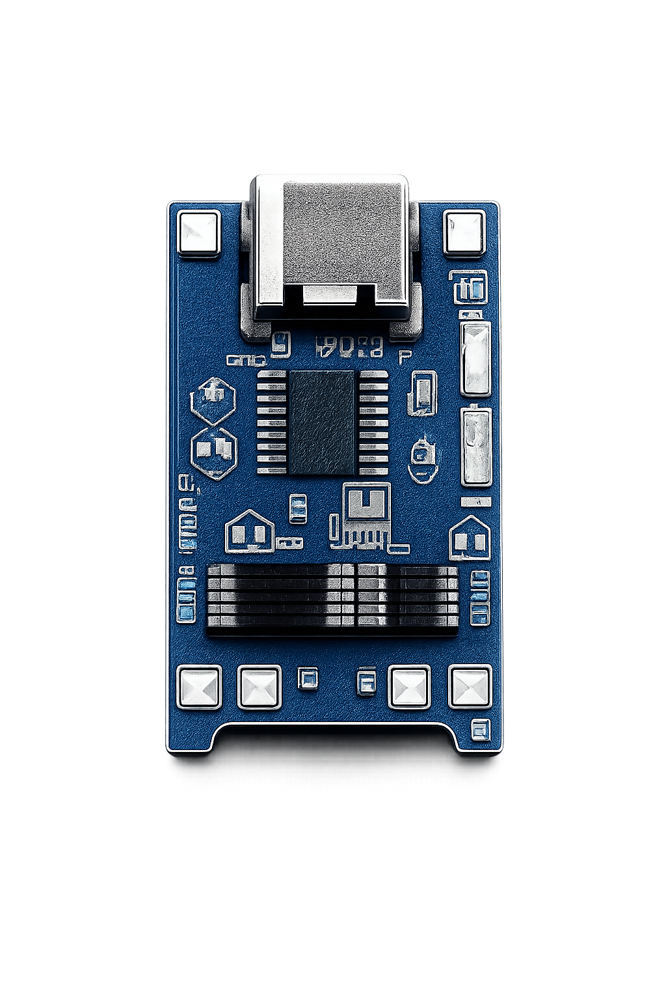
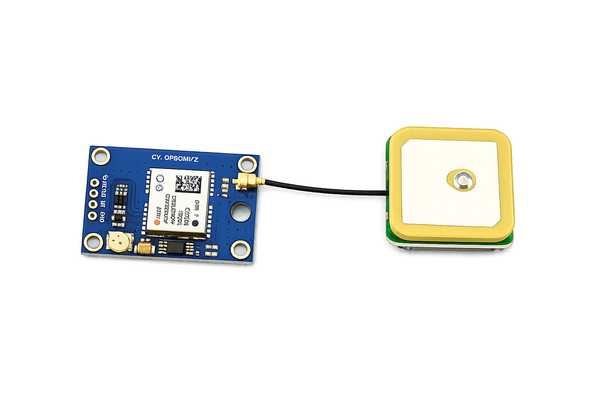
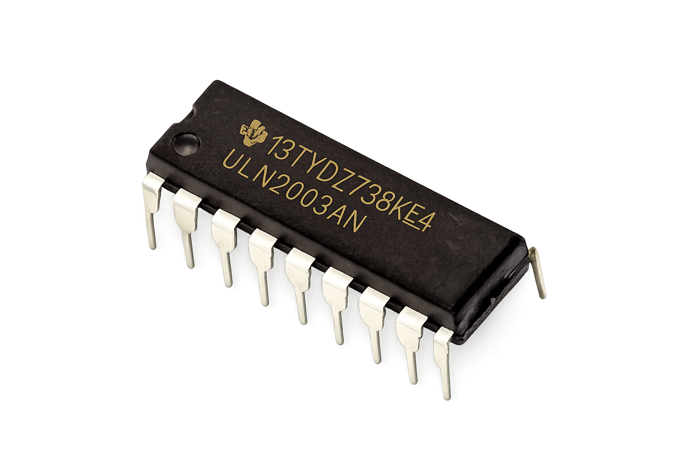

Problema
Los obstáculos inesperados pueden dificultar la movilidad y aumentar el riesgo de accidentes en personas con discapacidad visual.
Vision Stick busca ayudar a personas con discapacidad visual mediante sensores, alertas por vibración y una estructura práctica que facilite detectar obstáculos durante el desplazamiento.

Es una propuesta tecnológica que integra componentes electrónicos en un bastón para entregar alertas simples, rápidas y útiles al usuario.
Los obstáculos inesperados pueden dificultar la movilidad y aumentar el riesgo de accidentes en personas con discapacidad visual.
Crear un bastón con sensores ultrasónicos, vibradores y una placa ESP32 que detecte obstáculos y avise a la persona.
Desarrollar un prototipo funcional, económico y fácil de explicar, documentando cada avance del proceso.
Cada material cumple una función dentro del prototipo. Haz clic en cada tarjeta para ver su utilidad.










El registro del proyecto permite revisar semanas específicas y desplegar avances generales dentro de la misma página.
Vision Stick puede compartir su ubicación utilizando el módulo GPS NEO-8M conectado al ESP32. Para enviar los datos, el ESP32 se conecta a la zona WiFi del celular de la persona, permitiendo que los familiares puedan consultar la última ubicación registrada del bastón.
Esta sección reúne los elementos principales para respaldar el avance del proyecto: red social, ubicación y registros de trabajo.

Espacio para publicar avances, fotografías, videos cortos y novedades de Vision Stick. Cambia este enlace por el Instagram real del equipo.
Referencia del lugar donde se desarrolla y presenta el proyecto. Cambia este enlace por la ubicación real si lo necesitan.

Registro de avances semanales, fotografías del proceso y documentación general del prototipo.